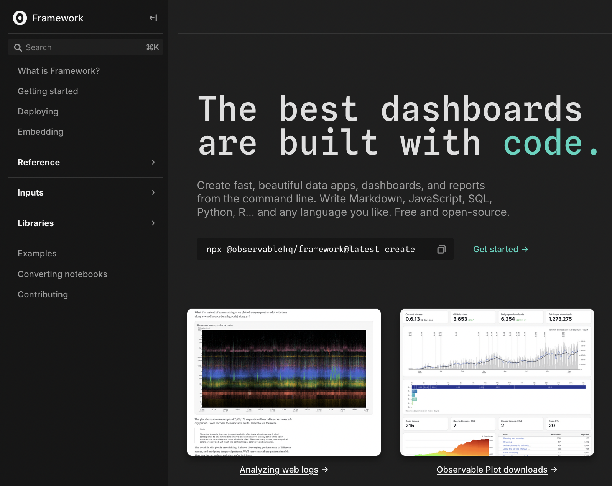
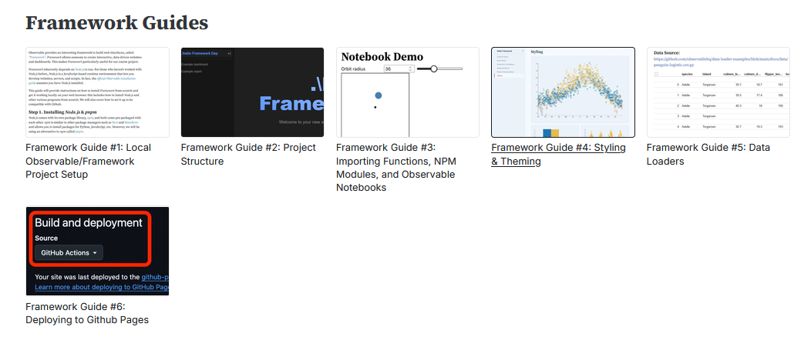

Week 6 Lab: Local Observable Frameworks, Group Team Formation
CS-GY 6313 - Information Visualization
New York University
2026-10-09
Week 6 Lab Overview
| User Interface | Graphics Library | Notebook(s) |
|---|---|---|
| observablehq.com | D3 Framework |
Observable Frameworks |
Today’s Lab Activities
Today we will be a exploring the following topics:
- How to set up a local instance of Observable via Framework
- Group Formation Time - Finding Teammates, Initial Brainstorming
- Upcoming Changes to Course Deliverables
- Project Group Check-in - Due by TONIGHT @ 11:59pm
Running Observable Locally: “Framework”
In prep for your group projects, it would be ideal to work on your own local instances of Observable…ness. The same group behind Observable also has released Framework, a JavaScript ecosystem for generating dashboards and web apps with Observable functionality.
We will focus a bit on making sure you are ready with a Framework project that you can upload to Github. Make sure to open today’s lab notebook, Local Observable Frameworks and follow along with the instructions.
[Note]: Framework is one of many options you can use for your project. We’re introducing it because it’s the closest to the Observable notebooks we’ve generated thus far.

Framework Prerequisites
Our guide assumes that you have a Github account.
If you do not, please make an account.
Installing Node.js and npm: Mac OSX
We will install Node.js and npm with a version manager called nvm.
Install nvm by following the instructions provided by the version manager’s Github documentation.
Open a CLI (“Command Line Interface”) in
Terminal.appor some other code editor such as VSCode.Paste and run the command, which downloads and installs the latest LTS version of Node.js:
Paste and run the command. This will switch the default Node.js version that your CLI uses to the LTS version you just installed:
Installing Node.js and npm: Windows
nvm is a Unix-based Node.js version manager. Windows as its own version, called nvm-windows.
Install nvm-windows via the installation instructions mentioned in their online documentation.
Open PowerShell as an administrator. Alternatively, open a CLI terminal in your code editor such as VSCode.
Paste and run the command, which downloads and installs the latest LTS version of Node.js:
Paste and run the command. This will switch the default Node.js version that your CLI uses to the LTS version you just installed:
Creating a Framework Project
Open a terminal window (either Terminal.app on MacOS, Command Prompt on Windows, or VS Code on either MacOS or Windows).
Navigate to any folder or location where you will be comfortable creating a new folder (e.g. the
Documents/directory on MacOS or theDesktop/on Windows). You can navigate to that location using the following command:Paste and run the command:
New instructions will be prompted from you in the terminal window. Answer all the directions that appear.
- You will likely be asked to install
@observablehq/framework@[VERSION]. Say “Yes” or “y” to proceed. - The defaults are fine
- If you want to have sample pages and content, you are free to say “Yes” to “Include sample files to help you get started?”; otherwise, say “No” to that prompt.
- When prompted with “Install dependencies?”, you are safe to say “Yes, via npm (recommended)”
- When prompted with “Initialize git repository?”, you are safe to say “Yes”
- You will likely be asked to install
At this point, Framework will create a brand new folder for you with all the code necessary to run a Framework project locally. If you ran with defaults, then the new folder will be titled “hello-framework”.
Running a Dev Server
We are ready to run a local server that we can use for development. Run the following command inside your project folder:
Your Framework webpage should then be loaded into a localhost server that you can view via the browser. The Framework architecture tracks any changes to any files and updates in real-time every time you save changes in a file.
Version Control via Github
After these steps, you should be able to push changes to your Github repository and pull them when needed.
Online, create an empty Github repository and feel free to name it anything you want (though generally you should try to match project names when possible).
Locally (via command line or via Github tool), add and commit all files in your project window.
Set the branch to “main”, add a new remote origin, and push your changes. The 3 commands to do so are provided below, as an example:
[Note]: Whenever you clone your repo to another folder or device, you must install dependencies again:
Framework Setup: Command Line Summary
# Step 1: Install Node.js LTS, for Mac OSX (after installing npx)
nvm install --lts
nvm use --lts
# Step 1: Install Node.js LTS, for Windows (after installing npx-windows)
nvm install lts
nvm use lts
# Step 2: Create a _Framework_ Project
npx @observablehq/framework@latest create
# Step 3: Run a Development Preview Server
npm run dev
# Step 4: Connecting an Empty Github Repo
git add -A
git commit -m "first commit"
git branch -M main
git remote add origin git@github.com:[USERNAME]/[PROJECT_NAME].git
git push -u origin mainHow Framework Works
General Operations:
- Framework generates webpages from Markdown files.
- Markdown files can mix and combine Markdown syntax, HTML, and JavaScript.
- Helper functions can be written in separate scripts and imported into Markdown files.
- NPM and Observable modules can be imported.
Best Practices
- Try to keep most dev files (major scripts, datasets, etc.) inside of the
src/folder. - Avoid dashboard rot by knowing beforehand what to create (i.e. a script, a database, a notebook) and keeping efficient/accessible/interactive design practices in mind.
Let’s Run a Live Demo!
Additional Framework Guides For the Course
Look up our other guides on Framework, if you wish to learn more.

Changes to Course Materials
We only have 2 weekly exercises remaining.
We will soon transition into two new deliverables for the course:
- Bi-weekly mini-projects that are expected to be delivered through Framework webpages, hosted with Github Pages.
- Group project milestones to report back on your overall progress as the semester progresses.
We will place more emphasis on our class’ AI Policy:
… you can use generative AI tools to do the assignments in this class. If you use an AI to guide you in completing an assignment, you must disclose which parts were generated by the AI. Remember that you are responsible for any errors or inaccuracies in AI-generated content, and you must be able to explain all submitted work.
Basically if you use AI for any exercises, mini-projects, milestone deliverables, or even for the final group project, you MUST disclose where and how you used it.
Project Groups: Finding Partners & Brainstorming
Spend the remainder of the class searching for teammates or datasets to focus working on. Aim to find a group by the end of class today, and report back to us your group members by TONIGHT on this Google Form.
Optimal groups tend to demonstrate:
- Diverse Skills and Knowledge: Each student has something unique they should bring to the table.
- Well-Planned Schedules: Group members may have different responsibilities, exam schedules, etc. Find members whose schedules align.
- Communication of Expectations: Students are expected to contribute equally to their group projects. Find members who you think will work well with your way of working.
- Efficient Code Environments & Workflow: Try to agree on a single code environment and workflow that works for all members. Do all members know how to use Git and version control systems?
The best groups are those that communicate with each other well, are honest with each other, and are not afraid to ask questions.
If you’re struggling, consider:
- Follow YOUR interests first! Don’t start by searching for a dataset; instead, focus on discussing at least one common interest among your group members first. Datasets should serve to help you explore those common interests.
- Start with simple questions In Lab #3, we covered question taxonomies and strategies for forming research questions. Try to:
- Explore what features represent in your chosen datasets.
- Start with simple questions, and use question-laddering to formulate more complex questions.
- Consider your target audience - who are you focusing your questions toward, and what kind of personas populate your target audience?
Final Reminders & Checks
- Exercise #6 concerns additional chart types in D3.js. it is due October 15th @ 11:59pm
- Project Group Check-in - Due by TONIGHT @ 11:59pm
- Have questions?
- Discord!
- Email!
- Office Hours!